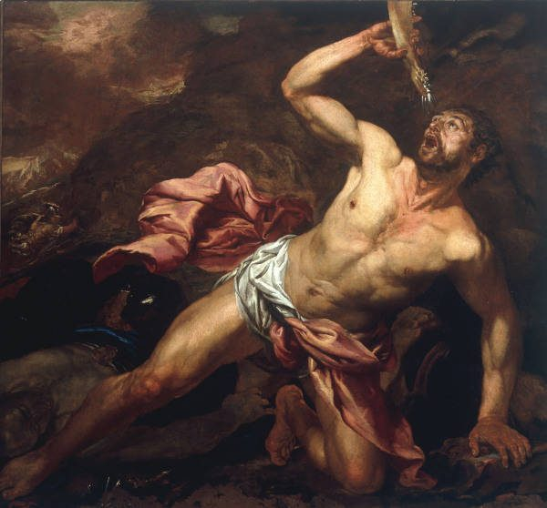

Judges 15 — The Mister Translation

Langetti paints the reading of verse 19 that the King James, the Geneva and the Douay give, where the water runs from the jawbone itself: Samson, kneeling among the dead, drinks from the bone he killed them with. The Hebrew can also be read, as this translation reads it, as a hollow in the place called Lehi, “Jaw”; the painting shows the older reading at its most literal.

Translator's Notes — verse by verse
A young goat. Samson comes back at wheat harvest with a gift. The words gedi izzim, “a young goat”, stand in five verses of the Hebrew Bible, and every time someone is bringing one to somebody: Judah’s promise to Tamar, “I will send a kid of the goats” (Genesis 38:17), Gideon’s meal for the angel (Judges 6:19), Manoah’s offer to the angel (Judges 13:15), all now on these pages, Samson’s gift here, and Jesse’s present to Saul (1 Samuel 16:20, now on these pages). The harvest matters too: the grain is standing in the fields when the foxes come.
“Into the inner room.” Ha-chadrah is the bridal chamber, the word the NWT 1984 read into Judges 14:18; here it stands in the Hebrew, and the NWT 1984 has “in the interior room” again. The KJV has “into the chamber”, the NIV “to my wife’s room”. The TLB says what the visit is for, “intending to sleep with her”.
“You hated her outright.” The father doubles both verbs: amor amarti, “I said, I said”, and sano sene’tah, “hate, you hated her”. It is the bride’s own charge from Judges 14:16 (now on these pages), “You only hate me”, now in her father’s mouth. Then the offer: “Is not her younger sister better than she?” — Laban’s house again, where “the name of the younger was Rachel” and a father traded one sister for the other (Genesis 29:16 and 29:26, now on these pages). The ASV has “I verily thought that thou hadst utterly hated her”, the NWT 1984 “You must unquestionably hate her”.
“This time I am clear.” Niqqeti is from naqah, “be clear, be guiltless”: Samson declares himself in the right before he acts. Four verses later he says niqqamti, “I will be avenged” (v. 7, naqam), and the two words lie close in sound. The KJV has “Now shall I be more blameless than the Philistines”, the ASV “This time shall I be blameless”, and the NIV “This time I have a right to get even”.
Foxes and torches. The plural shu’alim stands in two verses of the Hebrew Bible: here, and the foxes that prowl over desolate Zion in Lamentations 5:18. Whether the animal is the fox or the jackal, which hunts in packs, is a question the reference works raise; the word itself is “fox”. Three hundred, with torches, is the number and the light of Gideon’s men, who carried “torches inside the jars” (Judges 7:16, now on these pages). The KJV and the ASV have “firebrands”.
The whole harvest. The fire runs “from the sheaves to the standing grain, as far as the vineyards and the olive trees”: ve-ad kerem zayit, “as far as vineyard (and) olive”, which the shelf reads two ways. The KJV has “with the vineyards and olives”, the NIV “together with the vineyards and olive groves”, but the ASV joins the two words, “and also the oliveyards”.
The threat comes true. The Philistines ask who did it, are told “Samson, the son-in-law of the Timnite”, and burn the woman and her father with fire. It is exactly what the wedding guests threatened at Judges 14:15 (now on these pages), “we will burn you and your father’s house with fire”, and she gave up the riddle to escape it. Josephus, in the Greek of the Antiquities (5.296, numbered 5.8.7 in Whiston), has them burn her “and her relatives” alive.
Vengeance, and then a stop. “Since you act like this, I will be avenged on you, and after that I will stop.” He does not stop. The NIV has “I swear that I won’t stop until I get my revenge on you”, turning the stop around.
“Leg on thigh.” Shoq al yarekh stands in one verse of the Hebrew Bible, and its sense is a guess from the picture: a slaughter so complete that limbs are piled on limbs. The KJV and the ASV have the proverbial “hip and thigh”, the NWT 1984 “piling legs upon thighs”, and the Douay “in astonishment they laid the calf of the leg upon the thigh”. Then he goes down to “the cleft of the rock of Etam”; the KJV has “the top of the rock Etam”, the NIV “a cave in the rock of Etam”.
Judah. The tribe that went up first in the book (Judges 1:2, now on these pages) now sends three thousand men down to the rock to fetch one man for the Philistines. Their question is the narrator’s line from Judges 14:4 (now on these pages), turned into a grievance: “Do you not know that the Philistines are ruling over us?”
“As they did to me.” The Philistines came “to do to him as he did to us” (v. 10); Samson answers, “As they did to me, so I have done to them” (v. 11). The two sentences mirror each other, and the chapter does not say which side began. The NIV has Samson say “I merely did to them what they did to me”.
Two new ropes. He makes them swear not to kill him themselves, and they bind him with avotim chadashim, “new ropes”. The phrase stands in three verses of the Hebrew Bible: here, and twice in Delilah’s room (Judges 16:11–12, now on these pages). The KJV has “two new cords”.
A shout to meet him. “The Philistines shouted to meet him”: heri’u likrato. The young lion came “roaring to meet him”, likrato, in the vineyards of Timnah (Judges 14:5, now on these pages), and the shout is the war-cry of Jericho, where “the people shouted with a great shout” (Joshua 6:20, now on these pages). The NWT 1984 has “shouted exultantly at meeting him”.
Flax and fire. The spirit of Jehovah rushes on him for the third time, and the ropes become “like flax that has burned in the fire” — fire again, after the foxes and the burned house. “His bonds melted off his hands”: vayimmassu, from masas, the verb of “the heart of the people melted” at Ai (Joshua 7:5, now on these pages). The ASV has “his bands dropped from off his hands”, and the TLB “snapped like thread”.
A fresh jawbone. Teriyah, “fresh”, is the word of Isaiah’s “raw gash” (Isaiah 1:6, now on these pages): the bone is new, not bleached. A Nazirite of God picks up a piece of a dead animal and kills elef, a thousand (dictionary). The NWT 1984 has “a moist jawbone of a male ass”.
The victory song. Bi-lechi ha-chamor, chamor chamoratayim: chamor is “donkey”, and chamor spelled the same is “heap”, so the first line says “with the jawbone of the donkey, a donkey, two donkeys” and “a heap, two heaps” at once. No English rendering keeps both. The translation keeps the heaps; the shelf goes every way. The KJV has “heaps upon heaps”, the NWT 1984 “one heap, two heaps!”, the NIV “I have made donkeys of them”, and the Douay “with the jaw of the colt of asses I have destroyed them”. Both Greek texts read a verb instead, exaleiphōn exēleipsa autous, “wiping out I wiped them out”.
Ramath-lehi. He throws the jawbone away and names the place Ramath-lehi, “Height of the Jaw”. Ramath can also be heard against ramah, the verb of “the horse and its rider he has thrown into the sea” (Exodus 15:1, now on these pages), a sound-play some readers hear and the chapter does not spell out. Both Greek texts call it Anairesis siagonos, “the taking-away of the jawbone”, and the Douay explains, “which is interpreted the lifting up of the jawbone”.
The first prayer. “He called to Jehovah”: for the first time Samson speaks to God, and it is about himself. He calls the thousand dead “this great salvation”, ha-teshu’ah ha-gedolah, given “by the hand of your servant”, and asks whether he must now “fall into the hand of the uncircumcised”, the word his parents used at Judges 14:3 (now on these pages). Josephus tells it as a lesson: Samson first boasted that he had won by his own strength, and his thirst taught him that human valour is nothing without God (Antiquities 5.301–302, numbered 5.8.9 in Whiston).
Water from the hollow — in Lehi, or in the jaw? “God split open the hollow that is in Lehi”: ha-maktesh is a mortar, a hollowed stone (Proverbs 27:22). Lehi is both the place and the word “jaw”, and the shelf divides on which is meant. The ASV has “the hollow place that is in Lehi”, and the NWT 1984 “a mortar-shaped hollow that was in Lehi”; but the KJV has “an hollow place that was in the jaw”, the Geneva “the cheek tooth, that was in the jaw”, and the Douay “a great tooth in the jaw of the ass”, so that the water runs from the jawbone itself. The A Greek text, too, has God open “the wound of the jawbone”. The verse ends “which is in Lehi to this day”, a place one could visit, and the translation reads the place.
“His spirit returned, and he revived.” The words vatashov rucho, “his spirit returned”, stand in two verses of the Hebrew Bible: here, and the starving Egyptian slave David’s men fed (1 Samuel 30:12, now on these pages). “He revived” is vayechi, the verb of “the spirit of Jacob their father revived” (Genesis 45:27, now on these pages). The spring is En-hakkore, “the spring of the one who called”, named from his calling in verse 18; the TLB translates it, “The Spring of the Man Who Prayed”. The chapter closes with the judge’s formula, twenty years “in the days of the Philistines” — they are still there.
Patterns worth carrying forward
Where this translation keeps the words exact and distinct: “a young goat” for gedi izzim, as for Gideon and Manoah; “the inner room” for ha-chadrah; “clear” for naqah and “avenged” for naqam; “torches” for lappidim, as in Gideon’s jars; “new ropes” for avotim chadashim; “to meet him” for likrato, as for the lion; “rushed on him” for tsalach, the third time; “melted” for masas; “a heap, two heaps” for chamor chamoratayim; and “Lehi” as the place in verse 19.
Echoes paid. The fire threatened at Judges 14:15 is carried out, and the bride’s “You only hate me” at 14:16 is taken up by her father. The spirit that rushed on Samson at Judges 14:6 and 14:19 rushes a third time. The lion that came roaring to meet him at 14:5 is answered by the Philistines’ shout, and “the uncircumcised” of 14:3 is now Samson’s own word. Gideon’s three hundred torches at Judges 7:16 come back on three hundred foxes, and Laban’s younger daughter at Genesis 29:26 stands behind the younger sister offered here.
Echoes planted. The new ropes return at Judges 16:11–12, Samson’s second and last prayer at 16:28, and the closing formula of twenty years at 16:31; those three are now on these pages. The words “his spirit returned” come back for the Egyptian slave at 1 Samuel 30:12, now on these pages.
Next installment in this book: Judges 16 — a prostitute in Gaza and the city gates carried to the hill before Hebron; Delilah in the valley of Sorek, eleven hundred pieces of silver from each lord, three lies and the truth, the razor, the eyes, the mill, and the pillars of Dagon’s house.